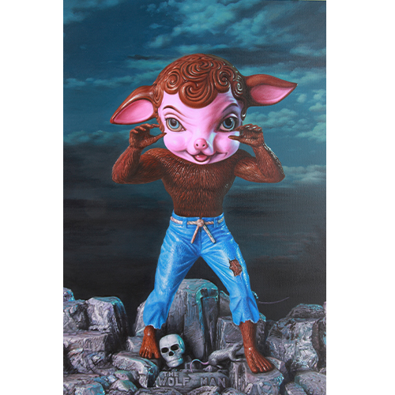

Exhibitions
Seasons in Suburbia, Corey Helford Gallery, Culver City (Los Angeles), California, US, November 19–December 10, 2011.
Living in Delusionville, Mesa Contemporary Arts Museum, Mesa Arts Center, Mesa, Arizona, US, September 9, 2022–January 22, 2023.
Literature
Ron English, Original Grin: The Art of Ron English (Paris: Cernunnos, 2019), p. 163. ISBN 978-2374950938.
Notes
Also known as Werewool.
The work is documented on Corey Helford Gallery’s dedicated exhibition object page, under RON ENGLISH Seasons In Supurbia, accessed April 8, 2026.
This work is documented as Ron English’s official poster for Pearl Jam with Mudhoney, Pacific Coliseum, Vancouver, BC, September 25, 2011; see the related image here.